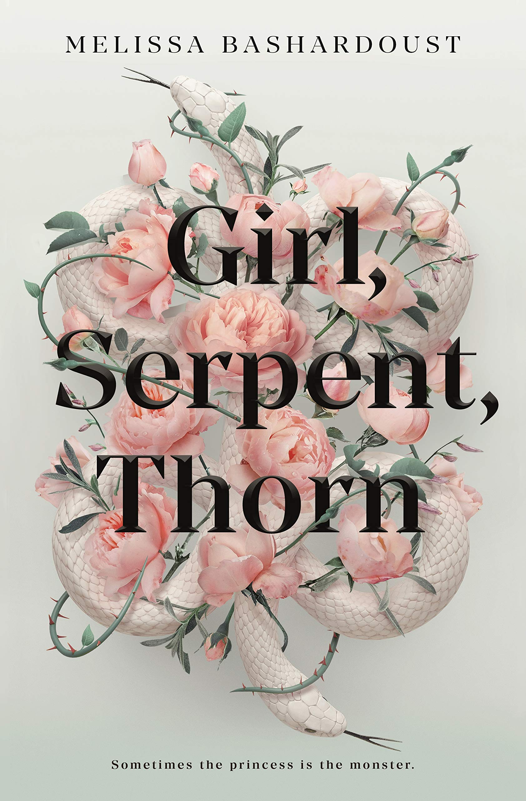

Girl, Serpent, Thorn
8/10
This book took a while for me to get into but when I did, I became pretty obsessed. I love the story because it’s a fresh and interesting take on a fantasy world. I wish it was more gay though. I feel like it is missing a good sex scene. I also don’t like how long it took to get gay. I understand why it took that long, but it could have been sooner. All around, this is a good book.